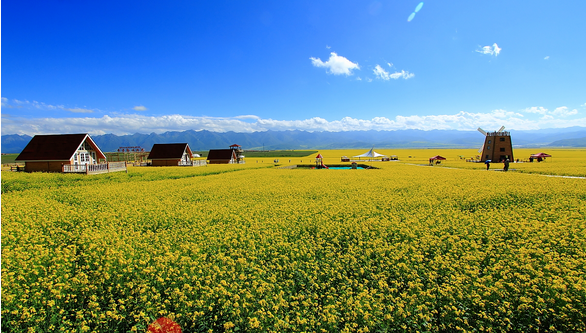
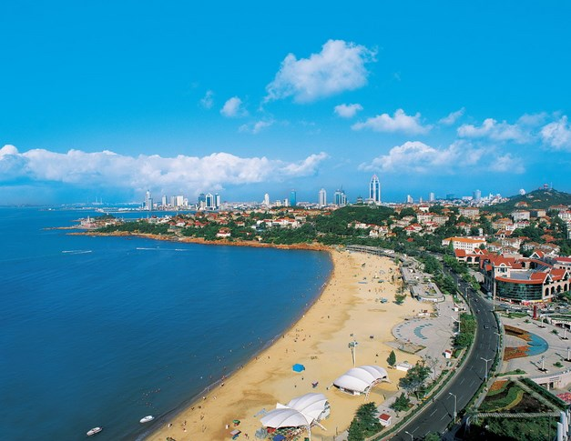
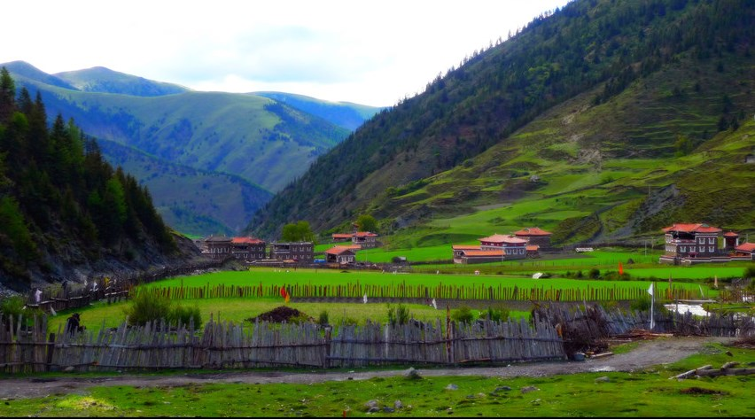
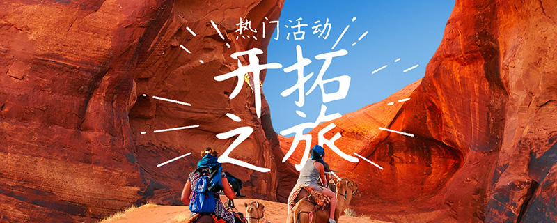

取消
热门搜索
烧烤
露营
徒步
行摄
采摘
滑雪
登山
探险
垂钓
溯溪
漂流
冲浪
美食
休闲
度假
背包客
旅拍
境外
商旅
休闲娱乐

【青海祁连】 门源油菜花-天境祁连-金沙湾-青海湖骑行-茶卡盐湖-贵德黄河丹霞-塔尔寺6日环线
【玩转伊犁】伊宁-赛里木湖-果子沟-阔克苏大峡谷-昭苏-夏特古道-昭苏天马-喀拉峻草原

【情迷半岛】2017全年假日特别计划.青岛—蓬莱—长岛—威海，由黄海之滨到北方最美海岛...
【古秦西安之旅】2017全年计划 梦回大唐——兵马俑里DIY-华清池边嬉戏--观壶口瀑布-耍腰鼓...

【川滇线】4-10月，从成都到丽江：海螺沟-新都桥-稻城亚丁-梅里雪山-香格里拉-普达措-丽江...
热门活动
周边目的地
租赁装备
企游团建
租车包车
精选攻略
特产
积分商城
活动专题

<#list activities as act>
${act.title?default('')}
${act.cost?default(0)}
元
更多专题
热门周边目的地
<#list records as record>]
${record.info.subject?default('')}
休闲
<#list record.tags as tag> ${tag.tag_name?default('')}
<#list record.images as img>
<#if img_index==2> <#break>
${record.info.desc?default('')}
更多周边目的地
主页
目的地
话题
我的